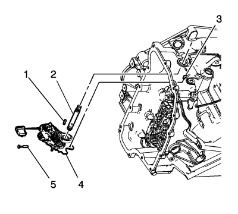
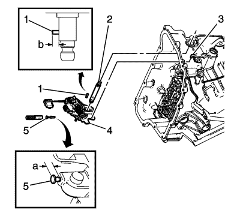

Palanca de bloqueo de cambio manual con sustitución del conjunto de interruptores de posición de cambio
Herramientas especiales
DT-41229 Herramienta de montaje del pasador del eje manual
Si desea informarse sobre herramientas regionales equivalentes, consultar Herramientas especiales .
Procedimiento de desmontaje
- Retire el cuerpo de válvulas de control. Consultar Sustitución del cuerpo de válvulas de control .

- Extraiga el pasador del cubo de la palanca de bloqueo del eje manual (1) con una palanca y unas tenazas.
- Extraiga y deseche el pasador del eje de cambio manual (5).
- Desmonte el eje manual (2).
- Desconecte la biela del actuador (3) del conjunto de la palanca de bloqueo. No extraiga la biela del actuador de la caja de cambios.
- Extraiga el conjunto de la palanca de bloqueo (con interruptor de posición del cambio) del eje manual (4).
Procedimiento de montaje

- Conecte la biela del actuador (3) al conjunto de la palanca de bloqueo.
- Monte el conjunto de la palanca de bloqueo (con interruptor de posición del cambio) del eje manual (4).
- Monte el eje manual (2).
- Monte el pasador del cubo de la palanca de bloqueo del eje manual (1) de una altura de 7,9 mm (0,38 pulg.) (b).
Atención: Utilice el J 41229 para instalar el pasador de eje manual a la altura correcta para fijar este de forma segura. Si instala el pasador a demasiada profundidad, el orificio de la caja podría agrietarse.
- Monte el pasador del eje de cambio manual NUEVO (5) con la herramienta de montaje de pasadores DT-41229. Utilice un pasador NUEVO para garantizar un acoplamiento adecuado con la caja.
- Compruebe que la altura del pasador instalado está entre 7,2-8,2 mm (0,28-0,32 pulg.) (a).
- Monte el cuerpo de la válvula de control. Consultar Sustitución del cuerpo de válvulas de control .
- Realice el procedimiento de programación de los valores adaptativos de la transmisión. Consultar Programar valores adaptativos de la transmisión .
| © Copyright Chevrolet. Reservados todos los derechos |